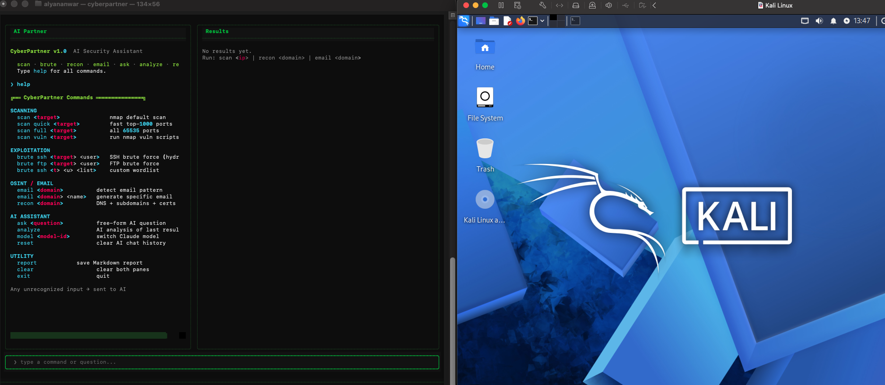
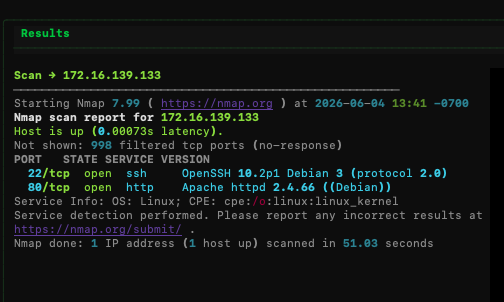
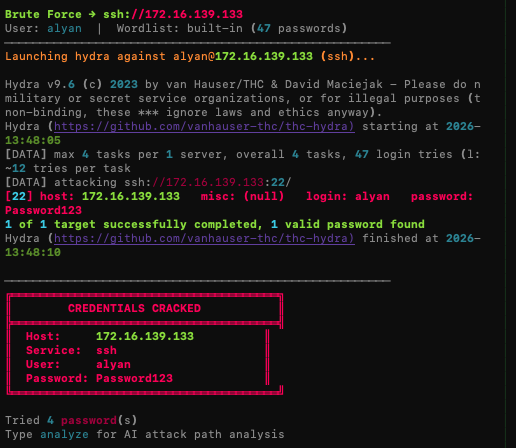
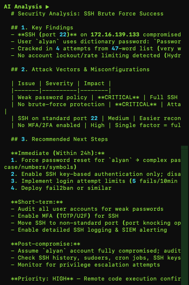

CyberPartner: AI Pentesting Terminal
A command-line security assistant that automates reconnaissance and OSINT, then uses an LLM to turn raw findings into an analyst-style report.
Screenshots




Overview
CyberPartner is a terminal-based security assistant I built in Python with a Textual TUI. The idea was simple: a lot of early recon work is repetitive glue between tools, so I wanted one command-line partner that runs the collection for me and hands back something readable.
It pulls subdomains and certificate data from crt.sh, harvests email patterns through the Hunter.io API, and drives nmap as a subprocess for service enumeration. Once the data is collected, it passes everything to the Anthropic API to summarize the findings into a clean, analyst-style report instead of a wall of raw output.
How It Works
- Textual TUI front end for interactive use right in the terminal
- crt.sh queries for subdomain and certificate transparency data
- Hunter.io API integration to harvest email patterns for a domain
- nmap run as a subprocess for service and port enumeration
- Anthropic API summarizes the collected data into a structured report
What I Learned
- Wiring multiple OSINT sources into one collection pipeline
- Driving external CLI tools cleanly from Python subprocesses
- Designing a usable terminal UI with Textual
- Prompting an LLM to turn messy tool output into useful analysis